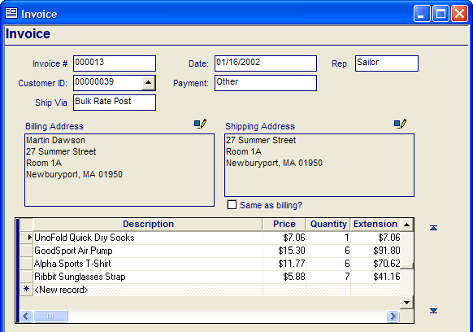
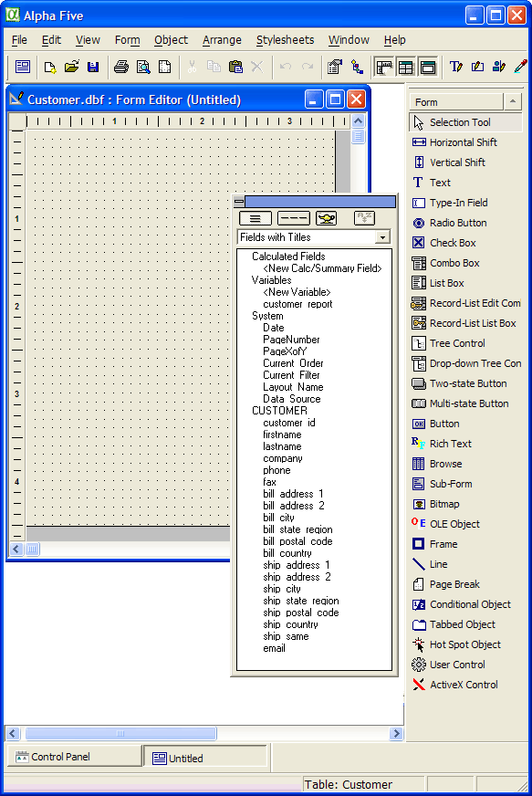

Using the Form Editor
Form Design Overview
Forms provide a detailed, one-record-at-a-time view of data in a table or set, and are most commonly used for data entry and editing. Forms also make it easy to enter and modify data stored across multiple tables in a database.
 Note : A form can display
data only from a single table or a single set.
Note : A form can display
data only from a single table or a single set.
For example, you can use a form to create invoices.

A Form for an Invoice
The form above is based on a set. It displays one invoice at a time and contains data from the parent and child tables used to create invoices.
Using the Form Editor
After you create a new form, the Form Editor appears. It contains three windows:
the new form (the illustration below shows a blank form, although a default or custom form would already contain fields and other objects).
the <span class=Screen>Drag and Drop List</span> (the floating toolbar with the white background, which lists variables, system fields, and table fields that you can place on the form).
the <span class=Screen>Toolbox</span> (docked at the right side of the screen, listing the various objects that you can place on the form).

Note how the title of the new form identifies its table and the form's
name, which at this point is untitled. The Window Bar
at the bottom of the screen indicates the there are two windows open.
You are currently using the Form Editor  to edit "Untitled".
to edit "Untitled".
The  button at the top of the screen hides and displays
the Toolbox. The
button at the top of the screen hides and displays
the Toolbox. The  button at the
top of the screen hides and displays the Drag and Drop
list.
button at the
top of the screen hides and displays the Drag and Drop
list.
From this point you can:
Place table fields on the form, all or a selected subset of the table's or set's fields
Place summary fields, calculated fields, and system fields on the form
Customize field properties, changing color, font, borders, and backgrounds
Insert an embedded browse, which lets you view multiple records at a time
Insert a subform, which can display different fields from the table or set
Place buttons that run scripts that perform calculations, print reports, or open other forms
Add color, text, lines, and graphics to the form
Create and assign toolbars to appear with the form.
Create and assign menus to appear with the form.
Add help text to the form or bubble help to fields
Restrict access to options like entering, changing, and deleting records
Set the record-order and record-selection criteria for the form